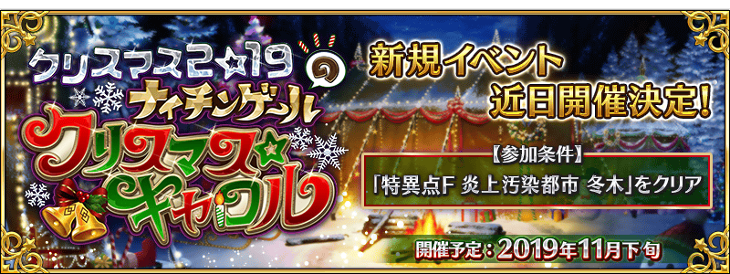

期間限定活動「聖誕節2019 南丁格爾的聖誕頌」舉辦決定！
詳情敬請期待續報。
◆活動舉辦預定◆
2019年11月下旬
◆活動參加條件◆
滿足以下條件的御主才能參加
・通過「特異點F 炎上汙染都市 冬木」
【11月22日(五) 17:00追記】
本活動的期間中，下表的從者在活動關卡中會得到「自身的攻擊威力提升」與「絆點數獲得量提升」的加成！
強化對象從者，挑戰活動吧！
※活動加成的效果量因從者而異。
※瑪琇・基利艾拉特「絆點數獲得量提升」效果，是所謂「我方全體含候補的絆點數獲得量提升」的效果。支援時此效果無效。
※自11月22日(五) 17:00，在從者選擇畫面和從者強化畫面等，追加活動加成篩選器。
由於是只顯示於活動活躍從者的便利功能，敬請活用。
【活動加成的對象從者】
| 職階 | 稀有度 | 從者名 |
|---|---|---|
| Saber | ★★★ | 蓋烏斯・尤利烏斯・凱撒 |
| ★ | 伊阿宋 | |
| Archer | ★★★★★ | 俄里翁 |
| ★★★★ | 馬嘶 | |
| ★★★★ | 阿提拉・the・San〔誕〕 | |
| ★★★★ | Emiya | |
| ★★★ | 羅賓漢 | |
| ★★ | 帕里斯 | |
| Lancer | ★★★★★ | 布拉達曼特 |
| ★★★★ | 貞德・Alter・聖誕・Lily | |
| ★★★ | 寶藏院胤舜 | |
| ★★ | 加雷斯 | |
| Rider | ★★★★ | 阿斯托爾福 |
| ★★★★ | 阿爾托莉亞・潘德拉剛〔聖誕Alter〕 | |
| ★★★ | 布狄卡 | |
| ★ | 巴沙洛繆・羅伯茨 | |
| Caster | ★★★★ | 童謠 |
| ★★ | 陳宮 | |
| ★★ | 漢斯・克里斯蒂安・安徒生 | |
| Assassin | ★★★★★ | 開膛手傑克 |
| ★★★ | 風魔小太郎 | |
| ★ | 夏綠蒂・科黛 | |
| Berserker | ★★★★★ | 弗拉德三世 |
| ★★★★★ | 坂田金時 | |
| ★★★★★ | 南丁格爾 | |
| ★★★★ | 阿塔蘭塔〔Alter〕 | |
| ★★★ | 大流士三世 | |
| ★★ | 莎樂美 | |
| Ruler | ★★★★★ | 天草四郎 |
| ★★★★ | 魁札爾・科亞特爾〔森巴／聖誕〕 | |
| Avenger | ★★★★★ | 貞德〔Alter〕 |
| Shielder | ★★★ | 瑪琇・基利艾拉特 |
※就算成為對象從者也會有在本活動的主線劇本未登場的情況。